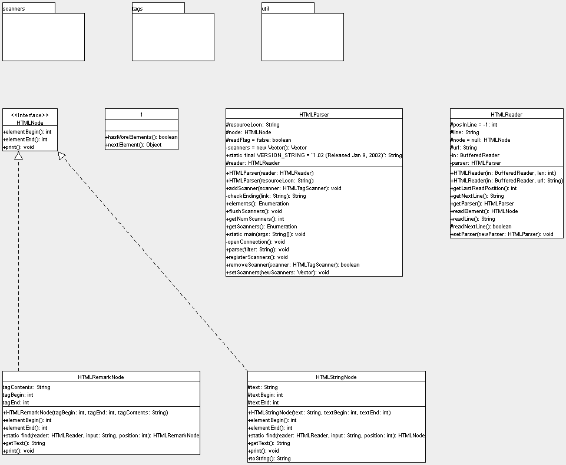

In the HTMLParser basic package, the user needs to only concern himself with the HTMLParser class. This class will take care of your parsing needs. In order to use it in your own application, here are some sample applications with explanations :
HTML String Filter : A program that
extracts only text elements from a html page
Robot Crawler : A program that crawls
recursively through all the links on a page, based on a specified depth
Mail Ripper : A program that rips all
mail addresses from a page.
|
Below you will find a basic UML diagram showing the com.kizna.html package. HTMLParser is the class that you would be directly using. HTMLParser can be instantiated either with a string representing the URL to be parsed, or the html file on your hard disk. It can also be instantiated with a HTMLReader of your choice. This flexibility is important, as one could have an HTMLReader customized for a particular Unicode stream. Being able to specify our own reader also allows us to write thorough test cases, and provide test data easily through strings. All tags and html elements implement or descend from an implementation of HTMLNode. |
|  |
Diagram generated with Argo UML